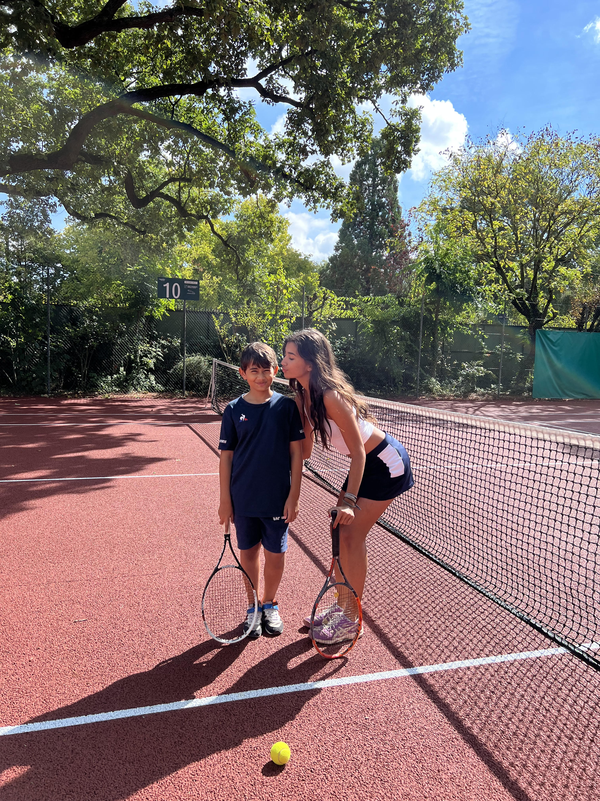
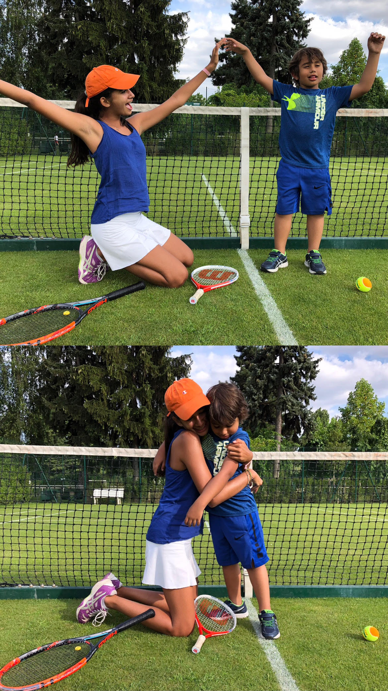

Hello, I'm Hermine !! I’m French and American from Paris, currently in the Cergy campus in English Track.
My social networksI’m currently pursuing my first year doing a Bachelor in Business Administration at Essec Business School. It is my opportunity to grow professionally and personally.
I started dancing at the age of 4, I did 9 years of ballet and 4 of Modern Jazz and Hip-Hop. It really is one of my passions, it is my way to express my feelings and tell a story. I use my body to share my emotions and communicate with the public.
Another passion I have is playing tennis with my little brother, it is a bonding moment between him and I.
 An example of entrepreneurship I have is “Harvard Model Congress Europe” when I was a member of the House of Intelligence. It was a role play Committee where we would debate on topics such as Cyber-Security with people from all over the world.